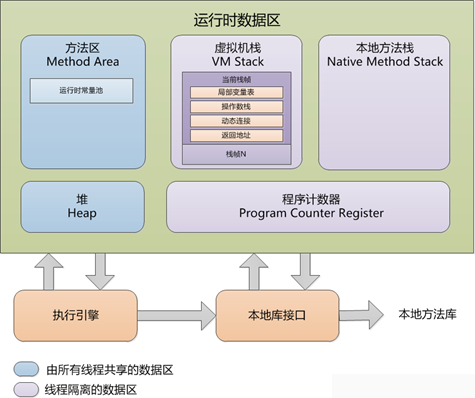
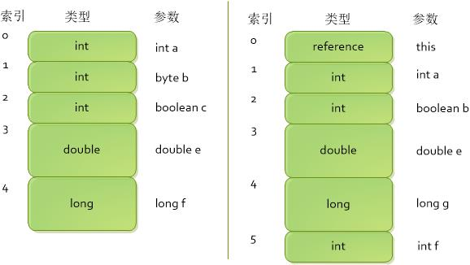
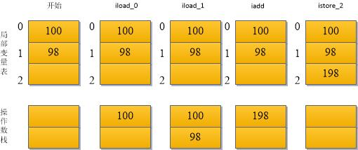
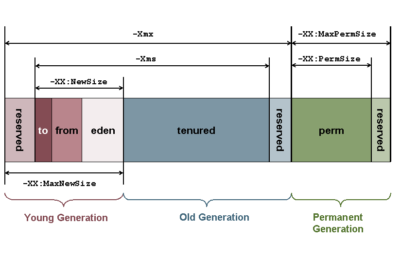
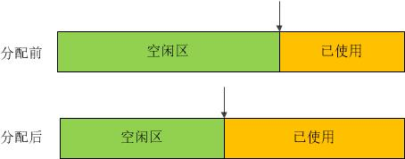
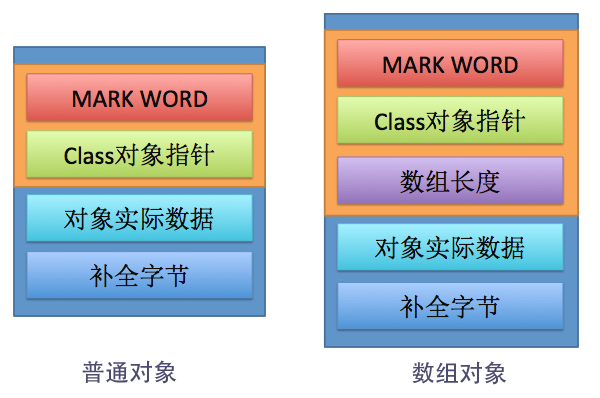
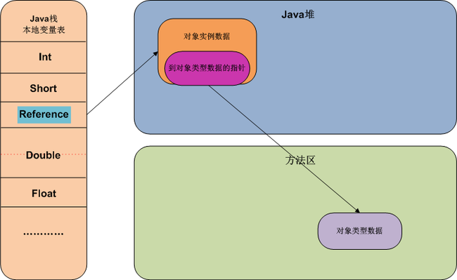

Java内存区域
Java虚拟机在执行Java程序过程中，会把它所管理的内存划分为若干个区域，每个区域有各自的用途，以及创建销毁时间，有线程私有区域，也有线程共享的区域，具体如下图所示：

程序计数器
是当前线程执行的下一条字节码的行号指示器（对于native方法，则为不确定），类似于汇编指令PC寄存器，使用它来控制程序跳转、分支、循环、异常、方法返回等流程。此区域为一个字长，是线程私有的，也是Java虚拟机规范中唯一没有定OOM情况的区域。
Java虚拟机栈
Java虚拟机栈描述的是Java方法执行的内存模型，每个方法的执行，都会创建一个栈帧，用于存储局部变量表、操作数栈、动态链接、方法出口信息，方法的一次执行对应一次栈帧的入栈与出栈。同程序计数器一样，Java虚拟机栈也是线程私有的。
局部变量表
局部变量表是一个以字长为单位的数组，里面存放的局部变量包基本类型（boolean, byte,short, char,int, float, double,long)、reference、returnAddress(虚拟机内部使用类型)，其中boolean、byte、short、char在操作数栈和局部变量表中都会转换为int类型处理，同int,float,refernce, returnAddress一样，占用一个字长，double和long占用两个字长（也就是说，对于字长为64bit的JVM, double与long占用128bit,其中高字为0）。
示例代码：1
2
3
4
5
6
7
8
9
10class LocalVarbiesTable{
public static int classMethod(int a, byte b, boolean c, double e, long f){
return 0;
}
public int instanceMethod(int a, boolean b, double e){
int f = 0;
long g = 0L;
return 0;
}
}对应的局部变量表：
注意项：
1） 对于实例方法，对一个参数永远是隐藏的this引用；
2） 参数在局部变量表中必须按申明的顺序存放，而内部变量可以不按申明顺序存放，甚至可以共用一个区域，例如下面的i,j变量(作用域不叠加)：1
2
3
4for(int i=0; i < 10; i++){
}
for(int j=0; j <2; j++){
}3） JVM是不支持boolean类型的，在虚拟机栈中被当做int处理，在heap和方法区中当做byte， boolean类型数组当成byte数组处理或者位域处理，但是对byte,short, char是支持的，只是在虚拟机栈中是当成int处理，在方法区或者堆中还是会当着原来的类型存储的。
操作数栈
与局部变量表一样，操作数栈也是一个以字长为单位的数组，只是以栈的方式获取数据，而不是以索引的方式。以下面字节码为例，演示两个局部变量相加的流程：1
2
3
4iload_0 //将局部变量表中索引为0的int入栈
iload_1 //将局部变量表中索引为1的int入栈
iadd //弹出栈顶两个int，并相加，把结果入栈
istore_2 //弹出栈顶int,存到局部变量表索引为2的位置对应的过程如下：
- 帧数据区
主要包括常量池解析、方法返回、异常派发等信息。
注意项：
1）Java虚拟机栈的实现方式并不一样，有从堆中分配栈帧的，有的从连续的栈中分配，有的是这两种方式的结合，与具体实现相关。
2）Java虚拟机规范中，规定这个区域有两种有两种异常状况：如果线程请求的栈深度超过所允许的深度，抛SOF异常；如果虚拟机栈动态扩展无法申请足够内存，就会抛出OOM异常。
本地方法栈
本地方法栈（Native Method Stack)与Java虚拟机栈类似，只是Java虚拟机栈为Java方法服务，本地方法栈为本地方法服务。Java虚拟机规范没有对这一块的实现做具体限制，由设计者自由发挥(sun HotSpot VM 将Java虚拟机栈和本地方法栈合二为一）。同Java虚拟机栈一样，本区域也有SOF和OOM。
方法区[TODO:需要看到后续章节更新]
方法区是一个线程共享的内存区域，用来保存已加载类的类信息、常量、静态变量、字节码等信息，由于是多线程共享的，所以需要考虑到线程安全问题。Sun 的HotSpot虚拟机中，方法区被描述为“永久代”（Permanent Generation),但两者并不是等价的，对于其他虚拟机而言，没有永久代的概念，而且HotSpot虚拟机也在考虑放弃使用“永久代”（-XX:MaxPermSize的内存上限，更内容遇到内存溢出，而且GC效率不高），更多信息参考Java永久代去哪儿了。
- 类信息
- 类的全限定名（例如：java.lang.Object)
- 类的直接超类全限定名（java.lang.Object没有超类）
- 类是类类型还是接口类型
- 类的访问修饰符(public、abstract、final)
- 实现的接口列表
- 类的常量池
- 字面常量
- 符号常量
- 字段信息
- 字段名（public、private、protected、static、final、volatile、transient)
- 字段类型
- 字段修饰符
- 方法信息
- 方法名
- 方法返回值类型
- 方法参数数量、类型（按声明顺序）
- 方法修饰符（public、private、protected、static、final、synchronized、native、abstract）
（抽象方法和本地方法不包含下面的项）- 方法字节码
- 操作数栈和局部变量表的大小
- 异常表
- 除常量外的静态（类）变量
- 一个到ClassLoader的引用
- 一个到Class类的引用
运行时常量池
运行时常量池是（Runtime Constant Pool)是方法区的一部分，Java虚拟机规范没有明确规定这部分的实现，一般用于存放符号引用以及解析过后的直接引用。相对于类常量池，运行时常量池具备动态性，Java语言中的常量并不是只有编译时才产生，也可以动态生成， 例如 String.intern()方法。
Java堆
Java堆（Heap)是JVM管理的一块最大的内存区域，也是线程共享的。Java虚拟机规范规定，所有的对象实例及数组都要在堆上分配，但是随着JIT技术的发展，栈上分配、标量替换等优化技术的出现，使得该规范并不是那么绝对。按照目前的主流的分代GC算法，Java堆可以划分为老年代和新生代（包括一个Eden空间、一个From Survivor、一个To SurVivor），甚至可以划分线程私有的分配缓冲区（Thread Local Allocation Buffer, TLAB)，划分是为了更加有效地GC或者分配内存。可以通过-Xmx和-Xms来设置堆的大小，当内存不够时，会报OOM。

Java堆中对象是如何创建、内存布局以及访问定位都与具体的虚拟机实现有关，本文以常用的HostSpot虚拟机为例，讲解这三个过程。
- 对象的创建
对象的创建（包括new，clone,反序列化）都是通过new指令来完成的， JVM在遇到一条new指令时，检查指令参数能否找到运行时常量池中找到符号引用，并查看此符号引用对应的类是否被加载、解析、和初始化。如果一切完成，虚拟机就会为该实例分配固定大小的空间（大小如何确定，参考对象的内存布局），书中描述的主要分配算法分为如下两种：
1) 指针碰撞
指针碰撞分配算法要求内存是规整的，即内存的一半是空闲的，一半是已使用的，中间一个指针作为分界点的指示器，分配时，将指针往空闲端移动与对象大小相等的距离。

2) 空闲链表
虚拟机维护一个空闲链表，记录哪些内存块是空闲的，每次分配内存时，找一个足够大的块分配给该实例（ps:学操作系统时，查找有首次适用、循环首次适用、最佳适用、最差适用等策略，暂时不明白HotSpot虚拟机使用哪种策略），并且更新空闲链表。
注意项：
1） 内存分配算法与垃圾回收算法需要配套使用，例如第一种分配算法需要带有Compact过程的垃圾收集器（Serial, ParNew等），而基于标记-清除算法的收集器（CMS)通常采用第二种分配算法。
2） 由于堆内存是线程共享的，所以在分配内存时需要保证线程安全的，有两种解决方案：(a)使用CAS指令做同步处理，保证更新操作的原子性; (b)为每个线程在堆中预先分配一小块内存，即本地线程分配缓存TLAB, 线程需要创建对象，优先在这块区域分配，当这部分内存用完，才使用前面的(a)办法。
当内存分配好之后，需要将本块内存清零，保证实例基本可以，然后设置对象的头信息（具体见对象的内存布局），最后按照程序的构造方法，按要求初始化实例变量（init方法）。 对象的内存布局
在HotSpot虚拟机中，对象在内存中的布局分为三个区域：对象头（header)、实例数据（instance data)和对齐填充（padding)。

对象头包括两个部分：标记字（Mark Word)和类型指针(Klass Pointer)，各占一个字（32位机器4字节/64位机器8字节）,对于数组而言，还需要一个额外的字来表示数组的长度。标记字包含对象自身运行时数据,根据不同的状态（下面括号中）复用这个字，具体包含hash码，分代年龄，偏向锁等信息，具体如下(TODO: 暂时没弄明白各个标志的具体作用，后面回过来详细介绍)：1
2
3
4
5
6
7
8
9
10
11
12
13
14
15
16
17
18
19// 32 bits:
// --------
// hash:25 ------------>| age:4 biased_lock:1 lock:2 (normal object)
// JavaThread*:23 epoch:2 age:4 biased_lock:1 lock:2 (biased object)
// size:32 ------------------------------------------>| (CMS free block)
// PromotedObject*:29 ---------->| promo_bits:3 ----->| (CMS promoted object)
//
// 64 bits:
// --------
// unused:25 hash:31 -->| unused:1 age:4 biased_lock:1 lock:2 (normal object)
// JavaThread*:54 epoch:2 unused:1 age:4 biased_lock:1 lock:2 (biased object)
// PromotedObject*:61 --------------------->| promo_bits:3 ----->| (CMS promoted object)
// size:64 ----------------------------------------------------->| (CMS free block)
//
// 64 bits use Compressed Ordinary Object Pointers
// unused:25 hash:31 -->| cms_free:1 age:4 biased_lock:1 lock:2 (COOPs && normal object)
// JavaThread*:54 epoch:2 cms_free:1 age:4 biased_lock:1 lock:2 (COOPs && biased object)
// narrowOop:32 unused:24 cms_free:1 unused:4 promo_bits:3 ----->| (COOPs && CMS promoted object)
// unused:21 size:35 -->| cms_free:1 unused:7 ------------------>| (COOPs && CMS free block)类型指针指向的是方法区该类的元数据，并不是所有虚拟机都有改字，有些虚拟机会采用其他的方式访问类的元数据，具体参考对象的访问定位。接下来就是实例数据区域，具体大小由虚拟机的分配策略以及对象的申明顺序有关，HotSpot虚拟机默认的分配策略为longs/doubles, ints, shorts/chars, bytes/booleans, oops（Ordinary Object Pointers），相同宽度的字段总是被分配到一起，父类中定义的变量会，出现在子类之前， 如果ComparctFields为true，子类中的变量也可能会插入到父类的空隙之中，具体参考对象大小布局。第三部分padding主要目的是为了让空间是字长的整数倍，用来补全，没有实际意义。
- 对象的访问定位
Java程序是通过引用来访问对象，访问方式取决于虚拟机的实现，目前主流的访问方式有两种：句柄访问方式和直接指针访问方式，而HotSpot采用的是后者。
1）句柄访问方式
如果采用句柄访问方式，堆上需要划分一块区域作为句柄池，栈上的引用存放的是句柄池中句柄的地址，而句柄中存放着指向堆中的实例地址和指向方法区的元数据地址，如下图。

2) 直接指针访问方式
如果采用直接指针访问方式，栈上存放的是实例的地址，而在实例中存放了指向对于类元信息的地址。

下图展示了一种基于直接指针访问二维数组的方式。

两种访问方式都各有优势，对于句柄访问方式而言，栈中存放的引用是稳定值，在移动实例时（GC),只需要改变句柄值；直接指针访问方式节省了一次指针定位的时间开销，定位更快，目前两种方式都比较常用。
直接内存
直接内存(Direct Memory)并不是虚拟机运行时数据区域的，也不是Java虚拟机规范定义的内存区域，只是经常被使用，而且可能导致OOM。典型应用就是NIO中的DirectByteBuffer，就是直接使用的堆外内存，可以避免Java堆与Native内存来回复制数据，提高性能。直接内存不受堆内存大小限制（-Xmx)，但受本机物理内存限制，所以在设置堆内存大小时，需要保留余地，否则容易报OOM。Java8以及之后的版本中，方法区已经从原来的JVM运行时数据区中被移到了一个称作元空间的直接内存区域Java永久代去哪儿了。
内存溢出异常
Java虚拟机规范规定了除程序计数器外，各个内存区域可能出现的OOM异常，下面以Sun公司HotSpot虚拟机为例，试验一些OOM和SOF的场景。
Java堆溢出
- 思想：不停创建Java对象，同时保证这些对象是GC Roots可达的，以保证不会被回收，从而超出堆的最大限制（-Xmx）。
示例代码：JVM
1
2
3
4
5
6
7
8
9
10
11
12
13
14
15
16
17package com.sbwei.oom;
import java.util.ArrayList;
import java.util.List;
/**
* VM Args: -Xms20m -Xmx20m -XX:+HeapDumpOnOutOfMemoryError
* @author sbwei
*/
public class HeapOOM {
public static void main(String[]args){
List<Double> list = new ArrayList<>();
while(true){
list.add(Double.valueOf(1.0));
}
}
}运行结果：
1
2
3
4
5
6
7java.lang.OutOfMemoryError: GC overhead limit exceeded
Dumping heap to java_pid7544.hprof ...
Heap dump file created [30336288 bytes in 0.839 secs]
Exception in thread "main" java.lang.OutOfMemoryError: GC overhead limit exceeded
at java.lang.Double.valueOf(Double.java:521)
at com.sbwei.oom.HeapOOM.main(HeapOOM.java:14)
......分析方法：
添加-XX:+HeapDumpOnOutOfMemoryError会让Java堆在OOM时打印内存快照文件（java_pid7544.hprof），然后确定是内存泄漏和还是内存溢出（Java堆中的对象是否是必要的），如果是内存泄漏，查找到GC Root的引用链，确定内存泄漏代码的位置；如果是内存溢出，就查看是否可以调整-Xmx的大小和本机内存大小，或者优化代码，减少内存消耗。
虚拟机栈和本地方法栈溢出
HotSpot的Java虚拟机栈和本地方法栈是合二为一的，可以同-Xss来设置栈的大小。Java虚拟机规范，规定该区域的两种异常，一种是栈深度超过最大深度报SOF,一种是栈帧无法请求到足够多的栈空间报OOM。事实上在单线程环境下，当-Xss固定为某个大小时，都报的SOF异常，在多线程的情况下，由于JVM进程的最大内存受操作系统限制（比如32windows系统为2G),在方法区（MaxPermSize）、堆（Xmx）以及所有的线程的栈空间之和大于最大进程最大限制时，就会报OOM异常（严格说还有其他部分的内存开销），所以在并发规模一定的情况下，增加堆内存（-Xmx）和增加堆栈大小（-Xss)反而会更容易OOM
- 思想：无限循环递归调用，直到超出了栈的最大容量（-Xss)
代码：JVM
1
2
3
4
5
6
7
8
9
10
11
12
13
14
15
16
17
18
19
20
21
22
23
24
25
26
27
28
29
30package com.sbwei.oom;
/**
* VM args: -Xss128k
* @author sbwei
*/
public class JavaVMStackSOF {
public int stackLength = 1;
private void stackLeakOne(){
stackLength ++;
stackLeakOne();
}
private void stackLeakTwo(){
double a = 1.0;
double b = 1.0;
long c = 0L;
stackLength ++;
stackLeakTwo();
}
public static void main(String[]args){
JavaVMStackSOF oom = new JavaVMStackSOF();
try{
oom.stackLeakOne();
//oom.stackLeakTwo();
}catch (Throwable e){
e.printStackTrace();
System.out.println("stackLength ----->" + oom.stackLength);
}
}
}运行结果：
1
2
3
4
5
6
7
8
9
10
11
12
13//stackLeakOne
java.lang.StackOverflowError
at com.sbwei.oom.JavaVMStackSOF.stackLeakOne(JavaVMStackSOF.java:10)
at com.sbwei.oom.JavaVMStackSOF.stackLeakOne(JavaVMStackSOF.java:11)
......
stackLength ----->964
----------
//stackLeakTwo
java.lang.StackOverflowError
at com.sbwei.oom.JavaVMStackSOF.stackLeakOne(JavaVMStackSOF.java:10)
at com.sbwei.oom.JavaVMStackSOF.stackLeakOne(JavaVMStackSOF.java:11)
......
stackLength ----->624上面是单独调用stackLeakOne和stackLeakTwo的结果表明，对于同样大小的栈容量，栈帧较大的stackLeakTwo更早SOF
运行时常量池溢出
Java7及之后版本的JVM已经将运行时常量池从方法区中移了出来，在Java 堆（Heap）中开辟了一块区域存放运行时常量池，可以验证是否正确。
- 思想：
设置永久代的初始值和最大值-XX:PermSize=10m -XX:MaxPermSize=10m，使用String.intern方法填充，对比Java6/Java7上运行结果；在Java7设置-Xms10m -Xmx10m, 查看运行结果,下面代码相同，运行的jdk版本和参数不一样。 代码：JVM
1
2
3
4
5
6
7
8
9
10
11
12
13
14
15
16
17
18
19package com.sbwei.oom;
import java.util.ArrayList;
import java.util.List;
/**
* VM args: -XX:PermSize=10M -XX:MaxPermSize=10M (对比Java6和Java7)
* VM args: -Xms10m -Xmx10m (Java7是否将运行时常量池移到heap)
* @author sbwei
*/
public class RuntimeConstantPoolOOM {
public static void main(String[]args){
List<String> list = new ArrayList<>();
int i = 0;
while(true){
list.add(String.valueOf(i++).intern());
}
}
}运行结果：
1
2
3
4
5
6
7
8
9
10
11
12
13//Java6 -XX:PermSize=10M -XX:MaxPermSize=10M
Exception in thread"main"java.lang.OutOfMemoryError：PermGen space
at java.lang.String.intern（Native Method）
at org.fenixsoft.oom.RuntimeConstantPoolOOM.main（RuntimeConstantPoolOOM.java：15）
//Java7 -XX:PermSize=10M -XX:MaxPermSize=10M
一直运行，直到电脑死机
//JDK7 -Xms10m -Xmx10m
Exception in thread "main" java.lang.OutOfMemoryError: GC overhead limit exceeded
at java.lang.Integer.toString(Integer.java:333)
at java.lang.String.valueOf(String.java:2959)
at com.sbwei.oom.RuntimeConstantPoolOOM.main(RuntimeConstantPoolOOM.java:15)总结
在Java7中方法区中的运行时常量池确实已经移到Java Heap中，所以-XX:MaxPermSize参数对运行时常量的大小起不到限定作用了，需要用参数-Xmx来限制。关于常量池以及String.intern()在Java7也有一些改变，可以参考深入解析String#intern.
方法区溢出
- 思想：方法区用于存放类的元信息，可以借助CGLib字节码技术，产生大量的类，来填充方法区。
代码：JVM
1
2
3
4
5
6
7
8
9
10
11
12
13
14
15
16
17
18
19
20
21
22
23
24
25
26
27
28
29
30
31package com.sbwei.oom;
import net.sf.cglib.proxy.Enhancer;
import net.sf.cglib.proxy.MethodInterceptor;
import net.sf.cglib.proxy.MethodProxy;
import java.lang.reflect.Method;
/**
* VM args: -XX:PermSize=10M -XX:MaxPermSize=10M
* @author sbwei
*/
public class JavaMethodAreaOOM {
public static void main(String[]args){
while(true) {
Enhancer enhancer = new Enhancer();
enhancer.setSuperclass(OOMObject.class);
enhancer.setUseCache(false);
enhancer.setCallback(new MethodInterceptor() {
public Object intercept(Object o, Method method,
Object[] objects, MethodProxy methodProxy) throws Throwable {
return methodProxy.invokeSuper(o, objects);
}
});
enhancer.create();
}
}
static class OOMObject{
}
}运行结果：
Exception in thread “main”
Exception: java.lang.OutOfMemoryError thrown from the UncaughtExceptionHandler in thread “main”- 总结
方法区内存溢出平常也常见，在许多的Web框架中（Struts,Hibernate,Spring等）都会用到各种字节码技术和自定义的类加载器，从而产生许多类的元信息。
直接内存溢出
- 思想：从Java1.4开始，引入了NIO,可以使用ByteBuffer.allocateDirect(size)来分配本机直接内存。
代码：JVM
1
2
3
4
5
6
7
8
9
10
11
12
13
14
15
16
17
18
19
20
21
22package com.sbwei.oom;
import java.nio.ByteBuffer;
import java.util.ArrayList;
import java.util.List;
/**
* VM args: -Xmx20M -XX:MaxDirectMemorySize=10M
* @author sbwei
*/
public class DirectMemoryOOM {
private static final int _1MB = 1024*1024;
public static void main(String[]args){
List<ByteBuffer> list = new ArrayList<>();
int count = 0;
while (true) {
list.add(ByteBuffer.allocateDirect(_1MB));
count++;
System.out.println( count + "M is allocated");
}
}
}运行结果：
1
2
3
4
5
6
7
8
9
10
11
12
13
14
15
16
17
18
19
201M is allocated
2M is allocated
3M is allocated
4M is allocated
5M is allocated
6M is allocated
7M is allocated
8M is allocated
9M is allocated
10M is allocated
Exception in thread "main" java.lang.OutOfMemoryError: Direct buffer memory
at java.nio.Bits.reserveMemory(Bits.java:658)
at java.nio.DirectByteBuffer.<init>(DirectByteBuffer.java:123)
at java.nio.ByteBuffer.allocateDirect(ByteBuffer.java:306)
at com.sbwei.oom.DirectMemoryOOM.main(DirectMemoryOOM.java:16)
at sun.reflect.NativeMethodAccessorImpl.invoke0(Native Method)
at sun.reflect.NativeMethodAccessorImpl.invoke(NativeMethodAccessorImpl.java:57)
at sun.reflect.DelegatingMethodAccessorImpl.invoke(DelegatingMethodAccessorImpl.java:43)
at java.lang.reflect.Method.invoke(Method.java:606)
at com.intellij.rt.execution.application.AppMain.main(AppMain.java:134)总结： 本机直接内存导致的内存溢出，比较明显的特征：heap dump文件中没有明内存溢出异常，而且dump的文件也比较小。
个人观点
上大学的时候，各种考试总是让我们为编程语言分类，例如C/C++是编译型语言，VB是解析型语言，Java是解析与编译相结合的语言等等。对于Java, 放到BEA公司的JRockit（号称世界上速度最快的JVM,专注服务端，不关注启动速度，所以不包含解析器的实现，全是JIT),我们可以认为Java是编译型语言,同样是C语言，也可以被解析执行。所以，语言属于编译还是解析类型，与语言本身无关，而是看它是放在解释器还是编译器上运行。
参考文献
- 周志明.《深入理解Java虚拟机：JVM高级特性与最佳实践（第2版）》[M]
- Bill Venners.《Inside the Java Virtual Machine, Second Edition》[M]
- http://stackoverflow.com/questions/1907318/java-boolean-primitive-type-size/
- IBM刘欣. 我是一个Java class
- Monica Beckwith. Java永久代去哪儿了
- http://stackoverflow.com/questions/26357186/what-is-in-java-object-header
- Java 对象占用空间大小计算
- 深入解析String#intern
- String放入运行时常量池的时机与String.intern()方法解惑
- JVM常量池和八种基本数据及字符串